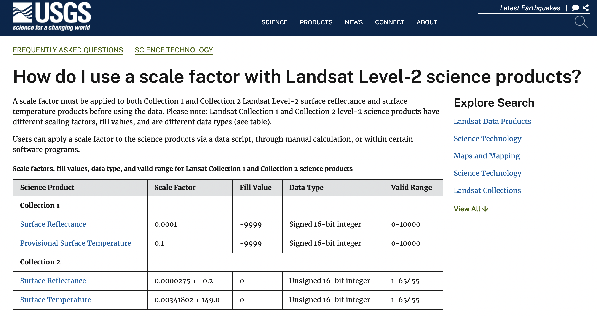

5 Introduction to Google Earth Engine
Because this week’s material is mainly to get acquainted with GEE using the skills and methodologies we learnt in previous weeks – this week’s learning diary will mainly feature GEE scripts, so I can refer here for main codes for basic analysis.
5.1 Summary
5.1.1 What is GEE about?
- A geospatial processing service, allow for large scale analysis
- EO data are all stored on the server
- Handy because it maps out the output immediately — good for visualisation
5.1.2 Google does things a little differently…
Naming Things…
| Gee | R |
|---|---|
| Image | Raster |
| Feature | Vector |
| ImageCollection | FeatureCollection (multiple polygons) |
Uses Javascript
Can’t run individual code chunk → must run the whole script!
Client v Server Side
| Client | Server |
|---|---|
| Frontend | Backend |
| Our scripts | processing the code |
| light! Nothing store locally | storing all EO data (anything with .ee in it) |
Notes:
- Don’t loop something on the server, looping is computationally very inefficient and loop doesn’t know what’s inside the
.ee - But a function (ie mapping) is welcomed, so that it can be saved as an object
- Mapping: make a function and apply to the entire collection
- only loading the initially colelction once!
Scale (aka pixel resolution)
Most things in GEE is aggregated, and GEE will automatically select the closest scale to your analysis and resample it.
Always set the scale parameters to what you need, if not, it will default to the zoom level of the map.
Always try to put in the scale:scale line
Projection
No need to think about projection, until exporting it out of GEE
Any new shapefile will be automatically transformed
GEE converts all their OE data to WGS84 Mercator (EPSG3857). Operations of projections are determined by output — meaning they do the working figuring out what you need, and give it to you.
Object Class
- Geometry: point, line, polygon with no attributes
- Feature: geometry with attribute table, single polygon
Thing to manipulate data with
- Reducer: take loads of data to one thing (zonal statistics)
- Join: can even join landsat and sentinel data!
- Array: spreadsheet
5.1.3 Applying
5.1.3.1 Loading In
When loading in ee.ImageCollection , we need to/can specify:
.filterDate(’start date’, ‘end date’).filter(ee.Filter.calendarRange(1, 2, 'month')).filterBounds(PlaceName).filter(ee.Filter.lt(”CLOUD_COVER”, 0.1))
Add Features & Geometries
Import GADM boundary map that has Delhi boundaries, in this case column GID_1 row IND.25.1_1
var india = ee.FeatureCollection('users/asdfgukyu/india-2')
.filter('GID_1 == "IND.25_1"');Load Landsat 9 data
filter by date, month, and bound. Each image has 19 bands, and when we add the map layer, with no filter on the bands to include.
var oneimage = ee.ImageCollection('LANDSAT/LC09/C02/T1_L2')
.filterDate('2020-01-01', '2022-10-10')
.filterBounds(india) // Intersecting ROI
.filter(ee.Filter.lt("CLOUD_COVER", 0.1));True Layer
If we want to get a true colour layer made with RGB.
Map.addLayer(oneimage, {bands: ["SR_B4", "SR_B3", "SR_B2"]})Otherwise, if we want all 19 bands:
Map.addLayer(oneimage)Both of the results show very dark images, but no clouds. We need to reduce all of these images so we get 1 that we can work with. We’re going ahead with the 19 bands here (oneimage).
Developing an image reducer The method we used here is reducing by median, but there are better ways to do this, like percentile or seasonal methods.
var median = oneimage.reduce(ee.Reducer.median());
print(median, "median") //Print to ConsoleAttacking Scaling Factor
Every EO data has its specific Scale Factor information. Here from the (HowUseScale?), Landsat Level 2 images have Surface Reflectance and Surface Temperature scale factors…

We then apply these scaling factors in a function.
function applyScaleFactors(image) {
var opticalBands = image.select('SR_B.').multiply(0.0000275).add(-0.2);
var thermalBands = image.select('ST_B.*').multiply(0.00341802).add(149.0);
return image.addBands(opticalBands, null, true)
.addBands(thermalBands, null, true);
}And now we apply the scale function to our image collection, and apply to median reducer as well.
var oneimage_scale = oneimage.map(applyScaleFactors);
//apply the median reducer from above
var oneimage_scale_median = oneimage.reduce(ee.Reducer.median());We still have 19 bands but only 1 image. Each band is a median of all the image layers we used.
5.1.3.2 Mapping
var vis_params = {
bands: ['SR_B4_median', 'SR_B3_median', 'SR_B2_median'],
min: 0.0,
max: 0.3,
};
// addlayer to map
Map.addLayer(oneimage_scale_median, vis_params,'True Color (432)');And now we can see!
5.1.3.3 Mosaicking
Joining 2 tiles together. From the image above you can see clear lines where the tiles overlap (due to date of collection + atmospheric correction applied). We’re gna get rid of the lines.
//Using the image collection before taking the medians.
var mosaic = oneimage_scale.mosaic();
var vis_params2 = {
bands: ['SR_B4', 'SR_B3', 'SR_B2'],
min: 0.0,
max: 0.3,
};
Map.addLayer(mosaic, vis_params2, 'spatial mosaic');Not much better, the demarcations are even more obvious..
Andy: instead of using the reducer, the easier and better way is just to take the mean of all the images.
var meanImage = oneimage_scale.mean();
Map.addLayer(meanImage, vis_params2, 'mean');Here the image is much better blended… But what’s the point of the median reducer???
5.1.3.4 Clipping
Now we want to clip to the shape of Delhi
var clip = meanImage.clip(india)
.select(['SR_B1', 'SR_B2', 'SR_B3', 'SR_B4', 'SR_B5', 'SR_B6', 'SR_B7']);
var vis_params3 = {
bands: ['SR_B4', 'SR_B3', 'SR_B2'],
min: 0,
max: 0.3,
};
// map the layer
Map.addLayer(clip, vis_params3, 'clip');Clipped!
5.1.3.5 Making and Adding Texture Layer
We want to compute texture using glcmTexture(). To do this we need to multiply the surface reflectance so it doesn’t reduce to 1 and 0 (bc the glcmtexture function only read integers). Note: there’s a lot of data here, if unresponsive, reduce bands.
var glcm = clip.select(['SR_B1', 'SR_B2', 'SR_B3', 'SR_B4', 'SR_B5', 'SR_B6', 'SR_B7'])
.multiply(1000)
.toUint16()
.glcmTexture({size: 1})
.select('SR_.._contrast|SR_.._diss')
.addBands(clip);
// Add back to the map, but change the range values
Map.addLayer(glcm, {min:14, max: 650}, 'glcm');
We made a purple texture layer! size 1 bc its the size of the neighbourhood to include in each GLCM. it means value of 1 creates a surrounding 3x3 grid. Refer to prac for more!!
5.1.3.6 Principle Component Analysis
Refer to Week 3 Correction for more PCA content.
Need to look at this section….
// Scale and band names
var scale = 30;
var bandNames = glcm.bandNames();
var region = india.geometry();
Map.centerObject(region, 10);
Map.addLayer(ee.Image().paint(region, 0, 2), {}, 'Region');
print(region, "india_geometry")
// this region is the outline of Dehli
// mean center the data and SD stretch the princapal components
// and an SD stretch of the principal components.
var meanDict = glcm.reduceRegion({
reducer: ee.Reducer.mean(),
geometry: region,
scale: scale,
maxPixels: 1e9
});
var means = ee.Image.constant(meanDict.values(bandNames));
var centered = glcm.subtract(means);
// This helper function returns a list of new band names.
var getNewBandNames = function(prefix) {
var seq = ee.List.sequence(1, bandNames.length());
return seq.map(function(b) {
return ee.String(prefix).cat(ee.Number(b).int());
});
};Now we have what we need for PCA.
// This function accepts mean centered imagery, a scale and
// a region in which to perform the analysis. It returns the
// Principal Components (PC) in the region as a new image.
var getPrincipalComponents = function(centered, scale, region) {
// Collapse the bands of the image into a 1D array per pixel.
var arrays = centered.toArray();
// Compute the covariance of the bands within the region.
var covar = arrays.reduceRegion({
reducer: ee.Reducer.centeredCovariance(),
geometry: region,
scale: scale,
maxPixels: 1e9
});
// Get the 'array' covariance result and cast to an array.
// This represents the band-to-band covariance within the region.
var covarArray = ee.Array(covar.get('array'));
// Perform an eigen analysis and slice apart the values and vectors.
var eigens = covarArray.eigen();
// This is a P-length vector of Eigenvalues.
var eigenValues = eigens.slice(1, 0, 1);
// This is a PxP matrix with eigenvectors in rows.
var eigenValuesList = eigenValues.toList().flatten()
var total = eigenValuesList.reduce(ee.Reducer.sum())
var percentageVariance = eigenValuesList.map(function(item) {
return (ee.Number(item).divide(total)).multiply(100).format('%.2f')
})
print("percentageVariance", percentageVariance)
var eigenVectors = eigens.slice(1, 1);
// Convert the array image to 2D arrays for matrix computations.
var arrayImage = arrays.toArray(1);
// Left multiply the image array by the matrix of eigenvectors.
var principalComponents = ee.Image(eigenVectors).matrixMultiply(arrayImage);
// Turn the square roots of the Eigenvalues into a P-band image.
var sdImage = ee.Image(eigenValues.sqrt())
.arrayProject([0]).arrayFlatten([getNewBandNames('sd')]);
// Turn the PCs into a P-band image, normalized by SD.
return principalComponents
// Throw out an an unneeded dimension, [[]] -> [].
.arrayProject([0])
// Make the one band array image a multi-band image, [] -> image.
.arrayFlatten([getNewBandNames('pc')])
// Normalize the PCs by their SDs.
.divide(sdImage);
};// Get the PCs at the specified scale and in the specified region
var pcImage = getPrincipalComponents(centered, scale, region);Now from PercentageVariance we know that the first 2 layers explains almost 90% of the variance. So we can print out the first 2 layers:
Map.addLayer(pcImage, {bands: ['pc2', 'pc1'], min: -2, max: 2}, 'PCA bands 1 and 2');Or if we want to whole stack:
for (var i = 0; i < bandNames.length().getInfo(); i++) {
var band = pcImage.bandNames().get(i).getInfo();
Map.addLayer(pcImage.select([band]), {min: -2, max: 2}, band);
}#Application